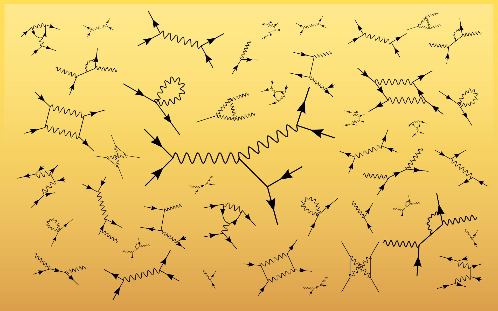

Home

Our research in theoretical high energy physics focus on quantum field theory and its application, with main research focuses on:
- Infrared structure of non-abelian gauge theories
- Effective field theory
- QCD factorization theorem
- All-order resummation and parton shower
- Collider phenomenology: jet, heavy flavor and Higgs physics
- Spin physics and quantum tomography of nucleons
- Application of quantum information theory
- AI for renormalization group flow
The research is closely connected to the experiments performed at the large hadron collider (LHC), relativistic heavy ion collider (RHIC), the future electron-ion collider (EIC) and super tau charm factory (STCF).
If you are interested in working with us as a postdoc, graduate student, or undergrad, please contact us.